Namespaces · Cgroups · UFS · AppArmor · SELinux
Membres du groupe
Docker est aujourd'hui l'un des outils les plus utilisés dans le monde du développement et de l'administration système. Grâce à ses conteneurs, il permet de créer, déployer et exécuter des applications de façon rapide, légère et isolée.
Un conteneur mal configuré peut devenir une porte d'entrée pour des attaques, ou compromettre les données de tout un système. C'est pourquoi la sécurité dans Docker est devenue une préoccupation majeure pour les entreprises comme pour les développeurs.
Dans cet exposé, nous allons d'abord expliquer comment Docker isole ses conteneurs, puis nous passerons à une démonstration pratique qui servira à illustrer les bonnes pratiques de sécurité.
Notre objectif : montrer que la sécurité n'est pas un obstacle dans Docker, mais une condition indispensable pour l'utiliser de manière professionnelle et fiable.
Docker isole chaque conteneur du système hôte et des autres conteneurs grâce à plusieurs technologies intégrées dans le noyau Linux. Si un conteneur est compromis, il ne peut pas facilement affecter les autres ou l'hôte.
Les namespaces permettent de créer des environnements isolés pour chaque conteneur. Chaque conteneur pense qu'il est seul sur le système.
| Namespace | Rôle |
|---|---|
| pid | Isole les processus — chaque conteneur a ses propres PIDs |
| mnt | Isole le système de fichiers |
| net | Isole les interfaces réseau et adresses IP |
| ipc | Isole les communications inter-processus |
| uts | Isole le nom de l'hôte et du domaine |
| user | Permet d'avoir des UID différents dans l'hôte et le conteneur |
Exemple : si vous lancez ps aux dans un conteneur, vous ne verrez que les processus de ce conteneur.
Les cgroups limitent l'utilisation des ressources système par un conteneur, évitant qu'un conteneur consomme toute la mémoire ou le CPU de l'hôte.
Chaque conteneur utilise une copie en lecture/écriture de son système de fichiers, basé sur l'image Docker. Cela empêche les conteneurs de modifier directement les fichiers du système hôte ou d'un autre conteneur.
Docker permet de créer des réseaux virtuels isolés. Par défaut, les conteneurs ne peuvent pas communiquer entre eux sans être dans le même réseau.
Sur certains systèmes, Docker utilise des profils de sécurité qui empêchent un conteneur d'accéder à des fichiers sensibles sur l'hôte.
AppArmor
Ubuntu / Debian
SELinux
Red Hat / CentOS
Objectif : Exécuter un conteneur avec secureuser pour limiter les privilèges et réduire les risques d'exploitation en cas de compromission.
1. Créer un conteneur Alpine
Ouvre un terminal et démarre un conteneur Alpine :
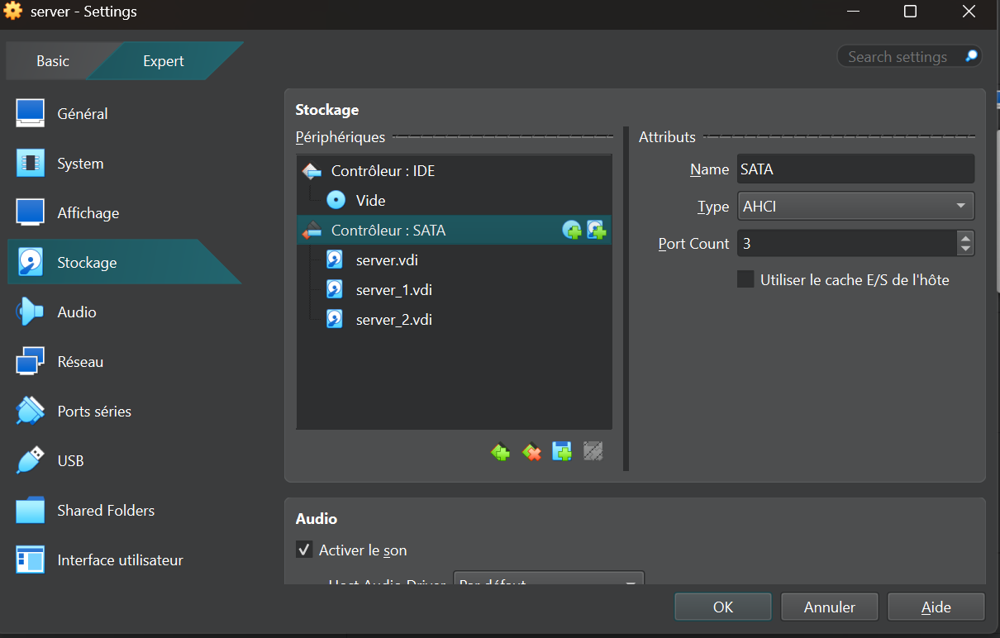
Cela te permet d'interagir directement avec le système dans un conteneur.
2. Créer un utilisateur dédié
À l'intérieur du conteneur, crée un utilisateur secureuser et définis son mot de passe :
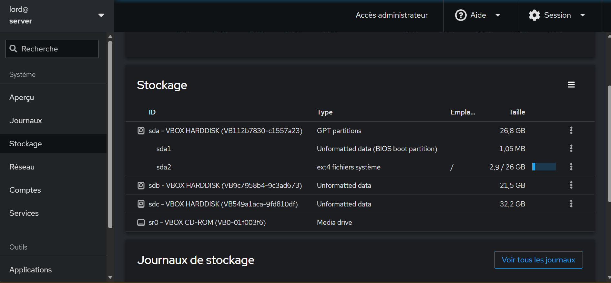
Test :
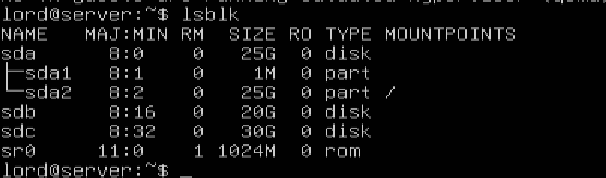
Si whoami affiche secureuser, alors l'utilisateur est bien actif.
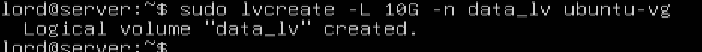
3. Créer une nouvelle image avec cet utilisateur
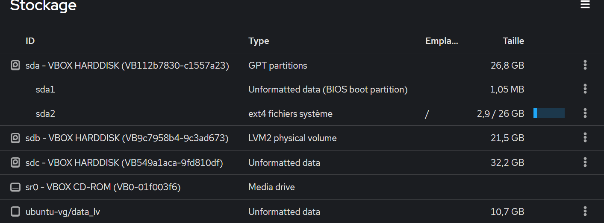
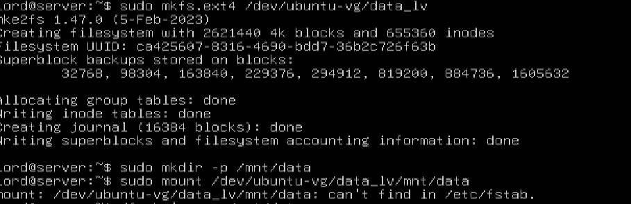
4. Commande finale avec bonnes pratiques intégrées
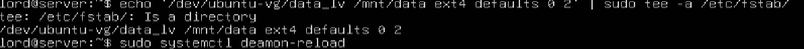
La commande id confirme que l'utilisateur n'est pas root (UID/GID non nuls).
Explication des options
--security-opt no-new-privileges
Empêche les processus d'acquérir de nouveaux privilèges via setuid ou setgid. Limite les risques d'escalade de privilèges.
--cap-drop ALL
Supprime toutes les capacités Linux par défaut du conteneur, réduisant les possibilités d'actions potentiellement dangereuses.
--cap-add NET_BIND_SERVICE
Permet de lier des sockets à des ports privilégiés (<1024) sans donner des privilèges root complets.
✅ Bonnes pratiques
Utiliser un utilisateur dédié plutôt que nobody — créer un utilisateur spécifique avec permissions minimales.
Éviter l'exécution en root — utiliser USER dans le Dockerfile pour définir un utilisateur non privilégié.
Restreindre les capacités du conteneur avec --security-opt no-new-privileges et --cap-drop ALL.
Objectif : Désactiver complètement l'accès réseau d'un conteneur, empêchant toute communication avec l'hôte ou d'autres conteneurs.
Commande
--user secureuser → Exécute le conteneur sans root.
--network none → Supprime toute connectivité réseau.
Vérification
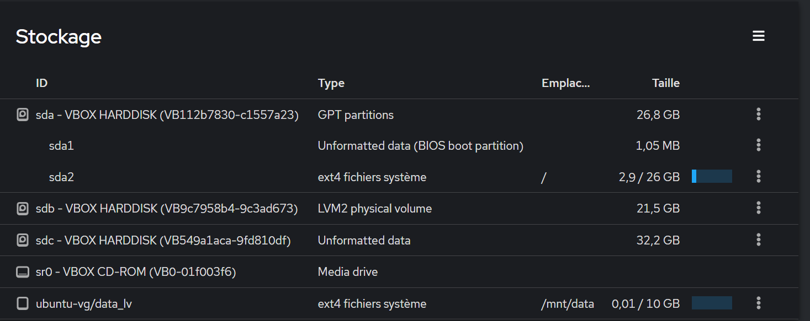
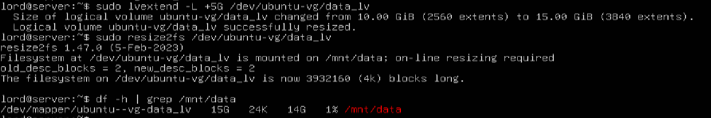
Interface lo (loopback) : Seule cette interface est active — communication interne uniquement.
Adresse 127.0.0.1 : Le conteneur peut communiquer avec lui-même mais pas avec d'autres réseaux.
Absence d'autres interfaces : Aucune carte réseau ou adresse IP externe n'est attribuée.
Objectif : L'option --read-only empêche toute modification du système de fichiers, renforçant l'intégrité des données.
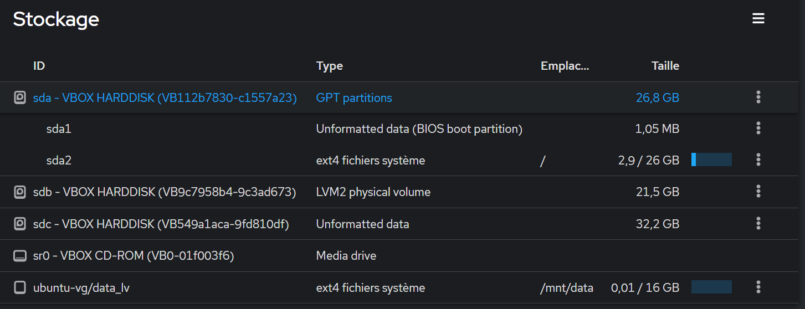
--user secureuser → Évite l'exécution en root.
--read-only → Active le mode lecture seule.
alpine_secureuser → Image contenant déjà secureuser.
sh → Lance un shell interactif.
Test d'écriture
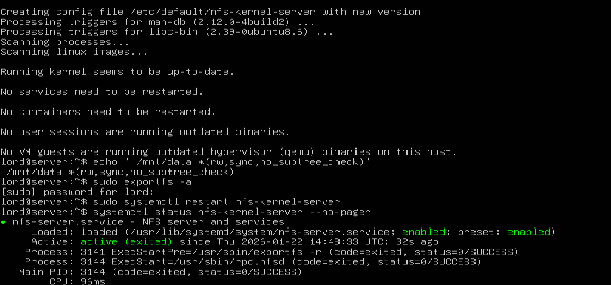
Résultat attendu : La commande d'écriture doit échouer car le système de fichiers est en lecture seule.
Utiliser --read-only pour les conteneurs servant des fichiers statiques ou des applications web.
Associer un volume -v /data:/data pour les écritures nécessaires — seul /data sera accessible en écriture !
Objectif : Éviter les surcharges et prévenir les abus (attaques DoS) en limitant l'utilisation des ressources d'un conteneur.
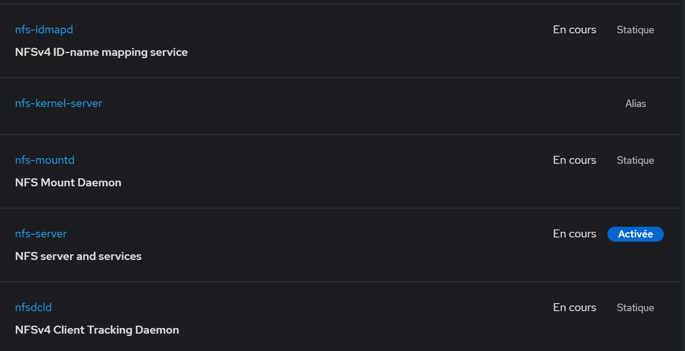
--memory="100m"
Limite à 100 Mo de RAM
--cpus="0.5"
Limite à 50% d'un cœur CPU
Cela empêche un conteneur malveillant d'utiliser toutes les ressources — attaque par déni de service (DoS).
Toujours limiter les ressources en production pour éviter les conflits entre applications.
Adapter les valeurs de --memory et --cpus selon les besoins réels de l'application.
Utiliser des cgroups pour un contrôle avancé des ressources.
Surveiller la consommation avec docker stats.
Docker offre une isolation efficace des conteneurs grâce à des mécanismes puissants comme les namespaces, les cgroups, le Union File System et les réseaux Docker. Ces technologies permettent de compartimenter les ressources et de limiter les interactions, réduisant ainsi les risques d'attaques.
Cependant, l'isolation seule ne suffit pas. Il est essentiel d'adopter des bonnes pratiques :
Exécuter des conteneurs avec des privilèges restreints (--security-opt no-new-privileges).
Supprimer les capacités inutiles (--cap-drop ALL).
Utiliser des profils de sécurité comme AppArmor et SELinux.
Restreindre l'accès réseau et éviter d'exposer directement des services sensibles.
Une approche proactive de la sécurité dans Docker permet de profiter de ses avantages sans compromettre la fiabilité du système. En combinant isolation et bonnes pratiques, on peut utiliser Docker en toute confiance, que ce soit pour un développement personnel ou en entreprise.